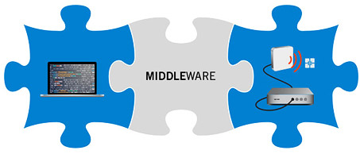

Middleware is used commonly to refer to software that help in the management of data and communication in distributed applications. It can also be described as a software connecting otherwise separate applications.
Middleware acts as a glue between applications and is also referred to as plumbing. Middleware is not only about import and export features in an application, instead it is more like a connecting cable that passes data to and from applications. Middleware categories include ESBs, DCB environments, Object request brokers, Database access systems, message passing and many more.
One of the most popular and used middleware variety is the Web Middleware. It can be defined as a large scale web enabled application and/or system which is deployed on several database servers and can be accessed by thousands of users through multiple web servers.
We design and develop some of the most demanding and high performing web middleware that manages interaction among tiers in Web based apps with multi-tiered architecture. Our expert developers also customise and fine tune these web middleware programs for performance and also for security.
We also customise and implement application infrastructure better known as Microsoft middleware. Microsoft middleware mainly consists of elements built mostly on .NET framework. We use them for both public and on-premises cloud environments
Websphere middleware is mainly the Websphere MQ, which is also message oriented middleware. By using Websphere Middleware, we enable communication between independent and potentially non-concurrent applications on a distributed system. One of the most interesting aspects of IBM Websphere Middleware is that it is available on a large number of platforms including Windows, Linux, z/OS and so on.
We have the most talented team of developers who are highly professional and experienced; they not only implement all these Middleware but also design and develop their own. They customise and implement as well as integrate Web Middleware, Microsoft Middleware, Websphere Middleware as per the need and for the best and most effective results. They also tune them for excellent performance and security. All these services and much more is available at the most affordable prices.
HIBERNATE
Hibernate is an ORM or object relational mapping library for Java. It also provides framework for mapping OODM or object oriented domain model to a conventional relational database. The direct persistence related database accesses and high level handling functions of Hibernate solves the object relational impedance mismatch problems.
Data query and retrieval facilities are some of the facilities, other than mapping, from java classes to database tables. Hibernate was designed and developed as an alternative to EJB2 style entity beans by Gavin King. Initially it was to offer better persistence abilities than EJB2, and also simplifying complexities as well as add some important and useful features.
Hibernate framework used to persist data from Java environment to database. The Hibernate architecture is minimally designed and it creates a layer between the application and the database. All details like mapping, database connection strings, entity classes and all other details are loaded, and a synchronisation is created between the database and the application by Hibernate.
Hibernate uses a persistence framework. This Hibernate framework stores and fetches data from Java environment to database tables. Permanent storing medium like SQL database is used by persistence. Hibernate database is strong and secure too, and can be used in a number of ways
We use Hibernate annotation on top of standardised Java persistence annotations, in a bid to utilise all Hibernate features. For optimising performance and also for special mappings, we use Hibernate annotations and hibernate-specific extension annotations. We handle mapping java class to the DB table using specialised Hibernate annotations or XML files and use its APIs to do the necessary functions among other things.
We make it easier to access databases and make fetching techniques easier. Our programmers also use Hibernate framework with carefully designed and developed Hibernate annotations to make your database safe and secure. We also ensure that they are easily accessible and our programmers also design a number of extremely easy and interactive applications for data analysis and better business performance.
Struts
Apache Struts, commonly known as Struts, are an Open source web application framework. It is used for developing Java Enterprise Edition Web Application. Struts encourage the MV architecture or the model view controller architecture, by using and extending the Java Servlet API. Initially known as the Jakarta Struts and located under the Apache Jakarta Project, it was originally created and later donated to the Apache foundation by Craig McClanahan.
The goal of Struts middleware and Struts Middle developers is to separate the model which is the application logic that interacts with the database from the view meaning the HTML pages presented to the client. Also, the model and view is separated from the Controller or the instance that passes information between the view and the model. Writing of templates for view or presentation layer is facilitated by the controller provided by Struts.
We are one of the most dependable and trusted companies that specialise in Struts and Struts middleware development. We have some of the most experienced and talented developers and programmers in our team. They design and develop application frameworks in Java as well as develop softwares customised for a variety of business needs. They use some of the standard software libraries that include Jakarta Struts or Struts, Apache Xerces, Apache Xalan among others.
Our Struts middleware developer team uses Java for developmental work and deployment in Application servers. Our Strut Middleware is developed in line with the need and recommendation of the client or their experts. They also are some of the experts in the industry who perform project planning, resource allocation and resolves the problems if any; using Struts internationalisation of web forms are also done.
This also includes template mechanism known as ‘Tiles’ which allows the presentation layer to be composed from independent content components, headers, menu navigation, etc. We also offer support and technical service for all our products. We are a single window customised solution provider for all IT related needs for business and other needs. We offer the best services and customised solutions at the most affordable prices.
Spring
An open source application framework, the Spring or the Spring framework is an inversion of control container for the Java Platform. Winner of a number of awards, the Spring was first written by Rod Johnson. Core features of this Spring framework can be used by Java applications. There are extensions included also that allows building web application too on top of the J2EE platform. The Spring framework is becoming popular as an addition or alternative for Enterprise JavaBean model or EJB model for building Spring middleware like EJB middleware, though spring framework does not impose any programming model.
We have the best programmers and developers to use spring framework that includes several modules that are able to provide a host of services. Key features of Spring java lies in its migration to Core Spring Java framework. We are one of the most well resourced and equipped that use spring framework and Spring Java to write applications for a whole lot of business needs and more.
We not only design and provide components that are based on proven design patterns, we also integrate them into all possible tiers of the application structure for the best effect and efficiency. We also ensure that the applications we design and develop, are productive and also improved in terms of quality and performance.
The different modules that provide a range of services are programmed by our developers. Using Java Spring we develop and unify several transaction management APIs and also coordinates transactions for java Objects. We also enable the highly useful cross cutting concerns and the remote access framework. Spring middleware and Java spring are also used in optimised form to enhance authentication and authorisation process completely. Also texting and testing as well as messaging can be some of the improved features.
We have the most dedicated and wonderful team of professionals who are expert programmers; they use both spring framework and other frameworks as well as certain programming languages, Spring Java and other resources to design some of the most effective and efficient Spring middleware. They also integrate them in a number of applications and other web pages for effectivity. We offer customised services to meet all your business needs.
EJB
Enterprise JavaBeans, also known as EJB, is for modular construction of Enterprise Applications. It is used for modular construction of enterprise applications using the managed server side component architecture of EJB. One of the several Java EE specification, EJB specification is one of the several Java APIs within the JEE specification. The business logic of an application is encapsulated in the server side model of EJB. Persistence, Security and transactional integrity are some of the common yet essential concerns that are handled by EJB technology and EJB middleware design and development.
EJB can also be simply described as a component-based architecture meant for managing reliable enterprise applications and also developing and deploying them in production environment. EJC Technology and architecture is at the core of J2EE or the Java Enterprise Edition. Web based enterprise applications for both intranet and the internet is supported and can be developed using both J2EE and EJB architecture and EJB technology.
EJB middleware is based on EJB architecture and EJB technology that makes it one of the most secure and stable technology for web-based and other enterprise applications. Our team of developers are extremely talented and gifted programmers who design and develop applications custom made for all business needs. The applications are not only safe and secure, they are also easy to use and always generate a positive impact on the user's mind.
We have some of the best and most talented developers who know the J2EE and EJB technology and architecture like no other. They design and develop some of the best EJB middleware which are clean and easy to maintain. They are easy to handle and maintain also. We use both the sessions beans and message driven beans to develop and customise applications to meet your requirements. We deliver the best and nothing but the best at the most affordable prices. We also stand by our products and provide support and service for an extended period of time.
Copyright © 2016 Mgainz Communication Pvt Ltd. - All Rights Reserved.
 +91 124 670 7927
+91 124 670 7927 support@mgainz.com
support@mgainz.com